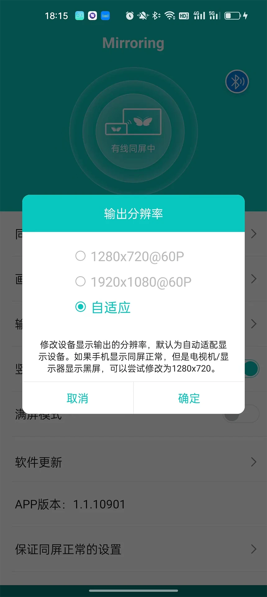
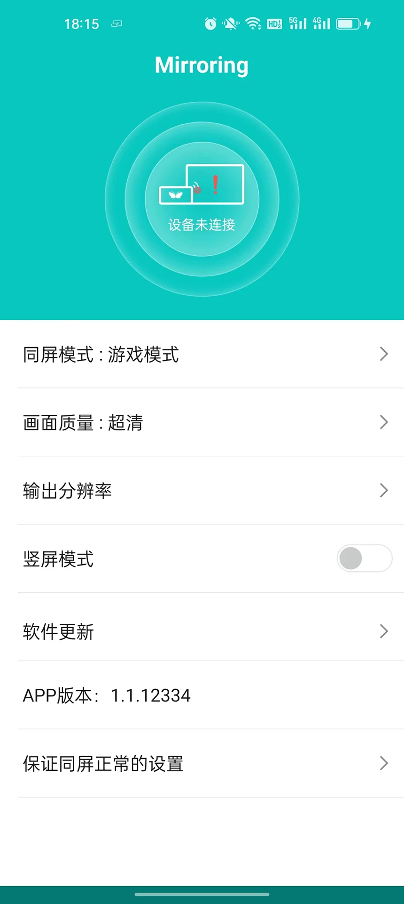

Mirroring 深度解析：一个投屏配套应用背后的硬件依赖哲学
为什么这款投屏应用非要绑定同屏器硬件才能发挥完整能力？从架构设计、双路线连接到反向控制，拆解 Mirroring 背后的技术取舍与稳定性密码。
为什么 Mirroring 不能像其他投屏软件那样"装上就能投"？
我第一次接触这款应用的时候也有这个疑问——应用商店里投屏工具一抓一把，AirPlay、Miracast、Chromecast 都是点开就搜设备，凭什么 Mirroring 非要插一个同屏器在电视上才能发挥完整能力？甚至连有线投屏这条路线，都得先开 OTG、插 USB、等弹窗，比别人麻烦一大截。安装包倒是不挑平台，官方下载页面直接提供 APK，不用去应用商店搜。
但用了几个月之后我发现：这种"不通用"恰恰是 Mirroring 最值得聊的设计决策。它不是被市场逼得才去做硬件配套，而是从一开始就选了一条和通用投屏完全不同的技术路径——这条路径的两端，一端是确定性，另一端是硬件成本。它的官网上对这套配套关系讲得很直白，不遮不掩。
拆解：软硬绑定的架构设计
通用投屏软件的工作逻辑很简单：你的手机已经有 Wi-Fi，电视也已经有 Wi-Fi，两者通过某个协议（AirPlay、Miracast 或是 DLNA）握手，然后手机把画面编码成视频流，推送到电视上解码显示。整个链路里没有额外的硬件参与，软件只负责协议适配和编码。
Mirroring 的架构画出来是另一个样子。手机侧的应用负责三件事：屏幕采集、编码、连接管理。但画面不是直接推给电视，而是先送到那个插在电视 HDMI 口上的同屏器——它才是真正和电视说话的那个设备。

这个拆分看似多余，实则解决了通用投屏的几个天生缺陷。电视的投屏协议支持参差不齐是公开的秘密：老电视根本没有，新电视虽然号称全能但往往在某个协议的某个版本上有 bug，酒店的电视更别想让你随便装应用。同屏器这层硬件把所有"电视是否支持投屏"这个问题直接短路了——只要有 HDMI 口就行，剩下的事交给同屏器自己和应用沟通。
连接管理也因此分成了两条完全独立的路线。
无线路线走的是 Wi-Fi 局域网，和通用投屏类似，但信号终点不是电视协议而是同屏器。应用搜索同屏器的 SSID，配对后建立传输通道。素材里提到的断连三大原因——智能切换、信号波动、后台杀手——全是这条路线的常客，因为 Wi-Fi 环境本身就是不稳定因素。
有线路线才是这套设计真正的杀手锏。USB 线直接把手机和同屏器连在一起，画面沿数据线传输，不经过任何网络节点。素材里那张对比表说得很清楚：有线路线对网络环境零依赖，还能边投边充。为什么这很重要？因为很多场景——酒店、会议室、客户现场——网络你说了不算，路由器拥堵、防火墙阻断、陌生 Wi-Fi 的隔离策略，任何一个都能让无线投屏当场死亡。
反向控制的实现：同屏器不只是"接收盒子"
如果你用过 Mirroring 接鼠标键盘反向操作手机，你会发现这不是一个"投屏附带功能"那么简单的东西。
通用投屏的屏幕是单向的——手机把画面推给电视，电视只是显示。Mirroring 的同屏器硬件里多了一条反向数据通道：它接收来自大屏侧（鼠标、键盘、触控）的输入事件，编码后通过 USB 或 Wi-Fi 传回手机，应用把这些事件翻译成触屏操作。
这套设计让 Mirroring 和其他投屏软件在能力上拉开了本质差距。通用方案里你要么凑在手机上点着玩，要么装一套复杂的远程控制（Scrcpy 那一类）。Mirroring 把这条反向通道做成了硬件级别的能力，插上就能用，而且因为走的是同一条传输通道，延迟和稳定性比独立的远程控制要好得多。
代价是什么？同屏器得支持这条通道，应用得配合做事件转译，整套硬件成本上去了。纯软件方案永远不用操心这些——但也永远给不了你鼠标键盘操控手机的确定性。
取舍：这套设计什么场景下会"失效"
讲原理不能只说好处。Mirroring 的软硬绑定哲学决定了它在某些场景下就是不如通用方案好用。
最明显的是多设备切换。通用投屏软件家里来多少台手机都能即开即用，Mirroring 的无线路线虽然也支持多设备，但你得记住每台手机和同屏器的配对状态，偶尔还得手动重新搜。对于"全家老小轮流投个视频"这种高频零散场景，它的门槛就是比别人高。
其次是无线路线的稳定性天花板。素材里提到的断开排查——关智能切换、挪手机、配后台保活——这些治标不治本，因为根因是 Wi-Fi 本身的波动。即便应用层面做了重连机制，信号贴着底线走的时候，画面卡顿和丢失还是会发生。有线路线可以绕开这个问题，但你总不能每次都随身带一根 USB 线。具体排查步骤可以去mirroring文档翻一遍，整理得比我这里细。
还有一个容易被忽略的点：硬件维护成本。同屏器是一个物理设备，用久了 HDMI 口会松、供电适配器会老化、USB 接口的针脚会氧化。素材里提到有线路线断开时要查"线材虚接"和"供电波动"——这些故障在纯软件投屏里根本不存在，因为压根没有硬件可坏。
判断：这套原理意味着什么
把上面所有设计决策放在一起看，Mirroring 的产品定位就很清晰了。
它不追求"覆盖所有投屏场景"，而是瞄准"投屏必须成功"的那一小撮刚需用户。老电视用户、差旅人士、长时间投屏的网课和直播、需要反向控制的演示——这些场景里，一次投屏失败带来的麻烦远大于硬件成本和设置门槛。Mirroring 把硬件成本换来了确定性，把设置门槛换来了对网络环境的零依赖。
反过来说，如果你家里是近三年的智能电视、偶尔投个短视频、对延迟不敏感，Mirroring 可能就是过度设计。通用投屏的协议已经足够好，装上就能用的体验比什么都重要。
素材里那段对比我觉得写得很准："判断的关键时刻是'投不出去'的那一次。"没错。当你在酒店的电视上试了 AirPlay 没反应、试了 Miracast 找不到设备、Wi-Fi 还被隔离到只能上网不能互联的时候，同屏器的价值会在那一刻让你意识到：原来投屏还可以是一件确定的事。

这套软硬绑定的哲学往深处走，其实是在回答一个老问题：软件能替代硬件到什么程度？通用投屏选择了"软件能做的事绝不加硬件"，Mirroring 选择了"软件做不好的事，加个硬件来兜底"。两者没有谁对谁错，只是对"投屏"这个场景的确定性有不同的期望。我自己的用法是家里智能电视用通用方案随手投，出差包里塞一个同屏器，什么时候该用哪个，试一次就知道了。手头这份 Mirroring 的资料归档了一份在开源仓库，GitHub、Gitee、GitCode 三个地方都能拉到，方便国内用户按需取：GitHub、Gitee、GitCode。